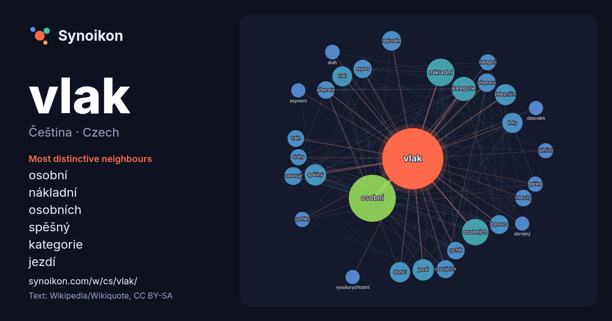

Čeština · Czech · word of the day list
vlak
“train” · The words found around it in 1149 instances from Czech Wikipedia, Wikiquote.

Most distinctive neighbours
- osobní 75×
- nákladní 40×
- osobních 37×
- spěšný 30×
- kategorie 26×
- jezdí 25×
- expres 22×
- dopravce 21×
- zastavují 21×
- přepravu 20×
- rychlík 20×
- přepravy 19×
- linky 19×
- stanici 19×
- regionální 19×
- intercity 18×
- train 18×
- železniční 17×
- cestujících 17×
- trati 16×
× = how many times more often than in general Czech Wikipedia text.
Most frequent neighbours
- osobní 144
- nákladní 50
- osobních 46
- kategorie 38
- jezdí 30
- spěšný 30
- železniční 29
- roku 28
- české 27
- linky 27
- stanici 27
- trati 26
- regionální 25
- dopravce 23
- expres 22
- přepravu 22
- cestujících 21
- označení 21
- zastavují 21
- některé 20
In context
- zdokonalení přispět v diskusi. Další významy jsou uvedeny na stránce Vlak (rozcestník). Vlak je jedno nebo několik pevně spojených vozidel, která jsou určená Wikipedia snippets · Vlak
- Obrněný vlak, taktéž pancéřový vlak se skládal z opancéřované lokomotivy a několika obrněných vagónů se zbraněmi. Složení se obměňovalo podle potřeby Wikipedia snippets · Obrněný vlak
- Vlak vyšší kvality je u Českých drah, a. s., souhrnné označení pro vlaky určené k cestám na větší vzdálenosti poskytující vyšší rychlost a komfort oproti Wikipedia snippets · Vlak vyšší kvality
- Modrý vlak (Plavi voz / Плави воз) byl osobní vlak Josipa Broze Tita, jugoslávské hlavy státu. V současné době je zachován jako muzejní vlak ve vlastnictví Wikipedia snippets · Modrý vlak
- Expres je kategorie vlaků určených k přepravě na delší vzdálenosti, které na své trase zastavují spíše zřídka. Obvykle patří mezi vlaky vyšší kvality. Doprava Wikipedia snippets · Expres (vlak)
- Vlak pro přepravu cestujících, případně vlak osobní přepravy, je souhrnné označení pro druhy vlaků (vlakových spojů), které jsou určeny pro přepravu osob Wikipedia snippets · Vlak pro přepravu cestujících
- Regionální vlak je určen zejména pro dopravní napojení periferních oblastí na jádrové a cestování na kratší vzdálenosti. Mezi regionální vlaky se řadí spoje Wikipedia snippets · Regionální vlak
- Tento článek je o zastávkových vlacích. O osobních vlacích obecně pojednává článek Vlak pro přepravu cestujících. Osobní vlak (značka Os) je na tratích Správy Wikipedia snippets · Osobní vlak
More Czech words
Precomputed on 2026-10-09 with default settings (±5 words, medium corpus). The interactive map can refresh it with live data.